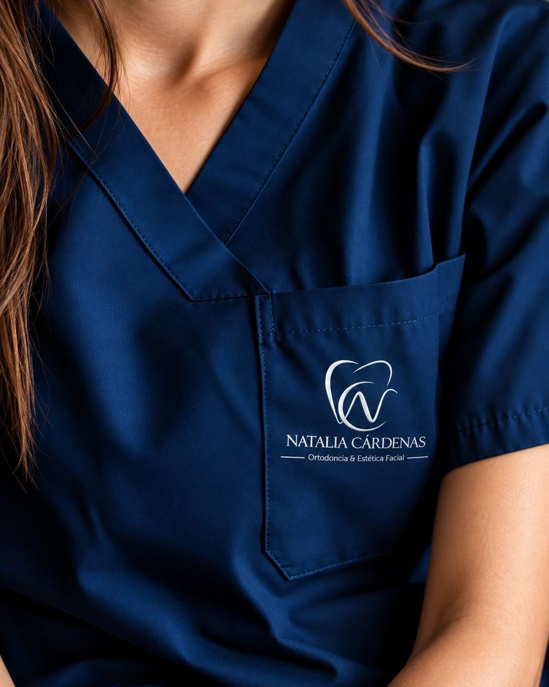
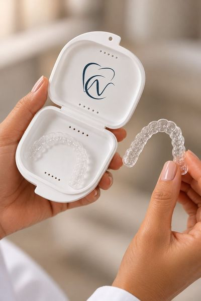
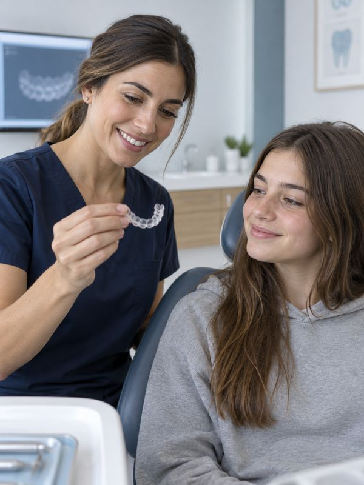
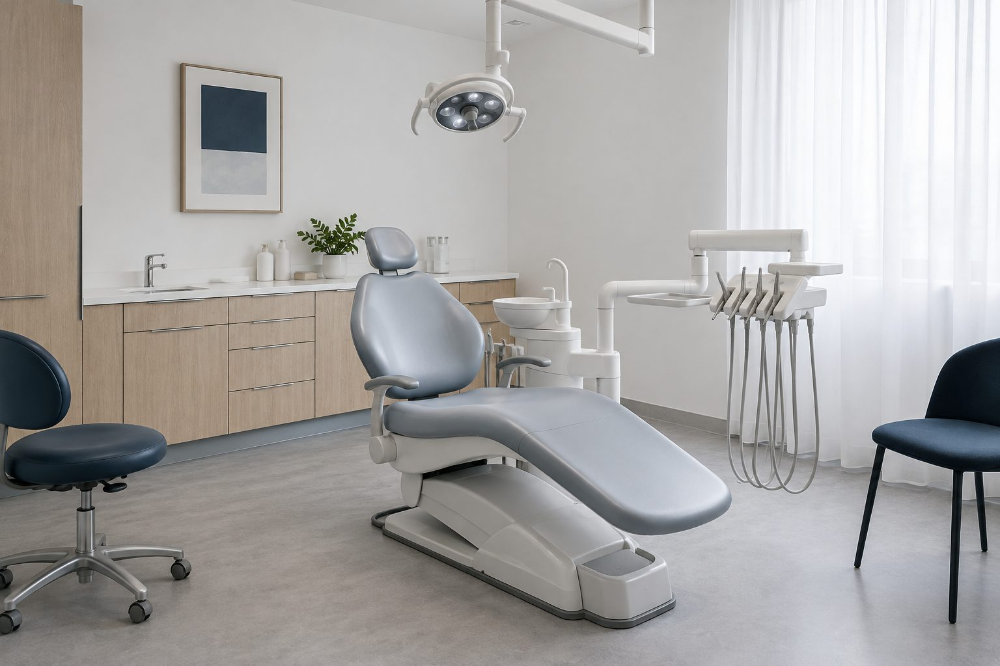
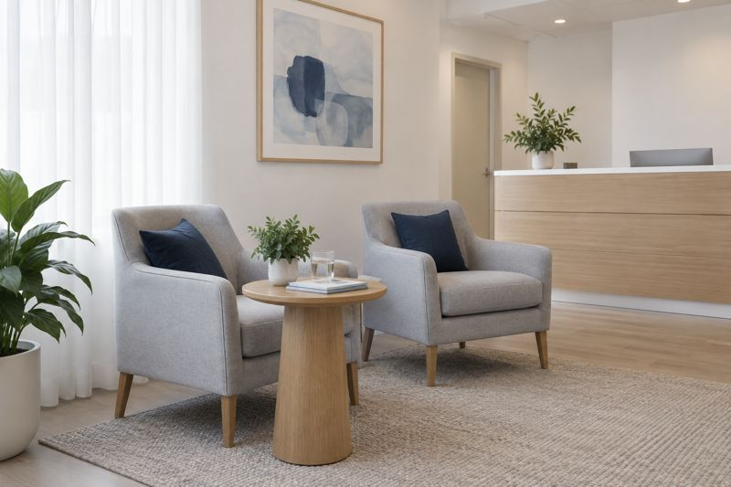
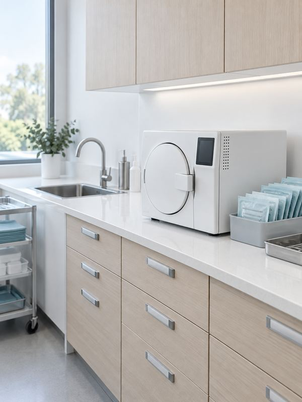

Controles y prevención
Limpieza, revisión y consejos para llegar al próximo control sin sorpresas.
Del primer control de los chicos a la ortodoncia de los grandes. Te explicamos lo que vemos, te mostramos las opciones y te acompañamos en cada etapa.


Para Natalia, una sonrisa es más que dientes derechos: es cómo crece la boca de un chico, cómo muerde un adulto y cómo se ve una cara cuando se ríe sin pensarlo. Con esa mirada fundó este consultorio.
Matrícula [M.P. N.º]
Nadie debería salir del odontólogo sin entender qué tiene. Por eso la primera consulta es para mirar, escuchar y explicar.
Qué te molesta, qué te preocupa y qué esperás del tratamiento.
Lo que vemos en la boca y en los estudios, en palabras simples.
Plan, tiempos y presupuesto por escrito, para pensarlo en casa.
Toda la familia en el mismo lugar, con el mismo criterio: hacer lo necesario y en el orden que corresponde.
Limpieza, revisión y consejos para llegar al próximo control sin sorpresas.
Caries y arreglos con materiales del color natural del diente.
Primeras visitas sin miedo y ortopedia que acompaña el crecimiento.
Brackets metálicos o estéticos, para adolescentes y adultos.
Placas transparentes que se sacan para comer y casi no se notan.
Blanqueamiento y carillas para una sonrisa luminosa y natural.
Tratamientos que complementan la sonrisa y respetan tu expresión.
Placas a medida para quien aprieta los dientes de noche.

Fundadora del consultorio. Atiende a chicos, adolescentes y adultos en ortodoncia, alineadores y ortopedia.
Luz natural, equipamiento nuevo y esterilización propia de todo el instrumental. Lo que no se ve también se cuida.



Estados Unidos 860, Oficina D